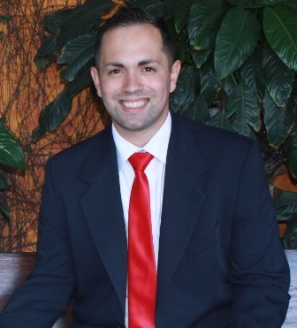

About Me
Álisson Inácio
Hello WWDD 130!
I'm Alisson Inacio, I'm from Brazil. I had lived in the southernmost state of Brazil called Rio Grande do Sul, before move to Mexico because of my job.
I have served a mission in Mexico Guadalajara, although I don't live there, it was an amazing time for me. My state in Brazil is formed for different people coming from Europe and native habitans. Germans, Italians, Poles, and descendants of slaves who inhabited the region. Therefore, it is common to hear various linguistic dialects from European peoples, as well as many customs inherited from Africa, in addition to the Spaniards who colonized Argentina and Uruguay, as well as the natives of the region. It is common to hear that we are a unique culture within our country.
I was batiptized in the Church of Jesus Christ when was fourteen years old, on March 27, 2010. I love science, and I was studying Chemical Engineering for almost four years when I lost my scholarship when I decided to serve as a missionary.
Studying at BYUI was an amazing and important event in my life. Because of my study I could work from home during all the covid-19 pandemic as an IT support. This helped me to find a way to be with my family and work for support its members.
My hobbies are singing, traveling, playing, guitar/electric guitar, cavaquinho and other instruments.
My wife and I are both converts to the Church and we enjoy cooking together
- ina21001@byui.edu
- Linkedin: Álisson Inácio